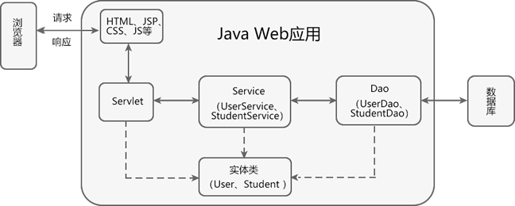
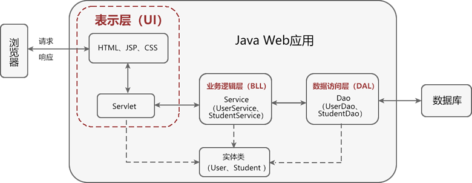

首页 > Spring MVC
MVC模式是什么
MVC 模式，全称为 Model-View-Controller（模型-视图-控制器）模式，它是一种软件架构模式，其目标是将软件的用户界面（即前台页面）和业务逻辑分离，使代码具有更高的可扩展性、可复用性、可维护性以及灵活性。
通常情况下，一个完整的 Java Web 应用程序，其结构如下图所示。
MVC 模式将应用程序划分成模型（Model）、视图（View）、控制器（Controller）等三层，如下图所示。

虽然三层架构和 MVC 模式一样，都是将应用划分成了 3 层，但它们的划分方式是不同的。
下图展示了三层架构的划分方式，我们可以很清楚地分辨出它与 MVC 模式的不同。
从上图可以看出，三层架构是由表示层（UI）、业务逻辑层（BLL）和数据访问层（DAL）三个层次构成的，而 MVC 则是由视图（View）层、控制（Controller）层以及模型（Model）层，且它们之间并不是一一对应的。
三层架构和 MVC 模式中各层对应关系如下：
三层架构将应用中的各个模块划分为表示层（UI）、业务逻辑层（BLL）和数据访问层（DAL）等三层，各层之间采用接口相互访问，并通过实体类作为数据传递的载体。不同的实体类一般对应于数据库中不同的数据表，且实体类的属性与数据库表的字段名一一对应 。
MVC 并不适合小型甚至中型规模的项目，花费大量时间将 MVC 应用到规模并不是很大的应用程序中，通常会得不偿失，因此对于 MVC 设计模式的使用要根据具体的应用场景来决定。
通常情况下，一个完整的 Java Web 应用程序，其结构如下图所示。

图1：Java Web 应用的结构
MVC 模式将应用程序划分成模型（Model）、视图（View）、控制器（Controller）等三层，如下图所示。
图2：MVC 模式
| 分层 | 描述 |
|---|---|
| Model（模型） |
它是应用程序的主体部分，主要由以下 2 部分组成：
一个模型可以为多个视图（View）提供数据，一套模型（Model）的代码只需写一次就可以被多个视图重用，有效地减少了代码的重复性，增加了代码的可复用性。 |
| View（视图） | 指在应用程序中专门用来与浏览器进行交互，展示数据的资源。在 Web 应用中，View 就是我们常说的前台页面，通常由 HTML、JSP、CSS、JavaScript 等组成。 |
| Controller（控制器） |
通常指的是，应用程序的 Servlet。它负责将用户的请求交给模型（Model）层进行处理，并将 Model 层处理完成的数据，返回给视图（View）渲染并展示给用户。 在这个过程中，Controller 层不会做任何业务处理，它只是 View（视图）层和 Model （模型）层连接的枢纽，负责调度 View 层和 Model 层，将用户界面和业务逻辑合理的组织在一起，起粘合剂的效果。 |
MVC模式 VS 三层架构
和 MVC 模式类似，三层架构同样将系统划分成了 3 层：- 表示层（UI）：用来实现与用户的交互，接收用户请求，并将请求交给业务逻辑层（BLL）和数据访问层（DAL）进行处理，最后将处理结果返回给用户。
- 业务逻辑层（BLL）：起到承上启下的作用，接收表示层传递来的请求，并针对业务对数据进行处理，以实现业务目标。
- 数据访问层（DAL）：用于实现与数据库的交互和访问，例如从数据库中获取数据、保存或修改数据库中的数据等。
虽然三层架构和 MVC 模式一样，都是将应用划分成了 3 层，但它们的划分方式是不同的。
下图展示了三层架构的划分方式，我们可以很清楚地分辨出它与 MVC 模式的不同。

图3：三层架构
图3：三层架构
从上图可以看出，三层架构是由表示层（UI）、业务逻辑层（BLL）和数据访问层（DAL）三个层次构成的，而 MVC 则是由视图（View）层、控制（Controller）层以及模型（Model）层，且它们之间并不是一一对应的。
三层架构和 MVC 模式中各层对应关系如下：
- 三层架构中的表示层（UI）包含 HTML、JSP 等前台页面以及后台的 Servlet，即它相当于 MVC 模式中的 View 层 + Controller 层。
- 三层架构中的业务逻辑层（BLL），则只包含了 Service 接口及其实现类（Servicelmpl）的代码，即它相当于 MVC 模式中 Model 层的一部分，并不包含 Dao 和实体类。
- 三层架构中的数据访问层（DAL），则只包含了 Dao 接口及其实现类（DaoImpl）的代码，即它相当于 MVC 模式中 Model 层的一部分，并不包含 Service 和实体类。
三层架构将应用中的各个模块划分为表示层（UI）、业务逻辑层（BLL）和数据访问层（DAL）等三层，各层之间采用接口相互访问，并通过实体类作为数据传递的载体。不同的实体类一般对应于数据库中不同的数据表，且实体类的属性与数据库表的字段名一一对应 。
从上面的划分方式来看，三层架构和 MVC 模式确实是不一样的，但从它们的核心来看，两者又是一样的，它们的核心都是“分层、解耦”。
MVC 的工作流程
MVC 的工作流程如下：- 用户发送请求到服务器；
- 在服务器中，请求被控制层（Controller）接收；
- Controller 调用相应的 Model 层处理请求；
- Model 层处理完毕将结果返回到 Controller；
- Controller 再根据 Model 返回的请求处理结果，找到相应的 View 视图；
- View 视图渲染数据后最终响应给浏览器。
MVC 的优点
MVC 模式具有以下优点：- 降低代码耦合性：在 MVC 模式中，三层之间相互独立，各司其职。一旦某一层的需求发生了变化，我们就只需要更改相应层中的代码即可，而不会对其他层中的代码造成影响。
- 有利于分工合作：在 MVC 模式中，将应用系统划分成了三个不同的层次，可以更好地实现开发分工。例如，网页设计人员专注于视图（View）层的开发，而那些对业务熟悉的开发人员对 Model 层进行开发，其他对业务不熟悉的开发人员则可以对 Controller 层进行开发。
- 有利于组件的重用：在 MVC 中，多个视图（View）可以共享同一个模型（Model），大大提高了系统中代码的可重用性。
MVC 的不足
MVC 模式存在以下不足之处：- 增加了系统结构和实现的复杂性：对于简单的应用，如果也严格遵循 MVC 模式，按照模型、视图与控制器对系统进行划分，无疑会增加系统结构的复杂性，并可能产生过多的更新操作，降低运行效率。
- 视图与控制器间的联系过于紧密：虽然视图与控制器是相互分离的，但它们之间联系却是十分紧密的。视图没有控制器的存在，其应用是很有限的，反之亦然，这样就妨碍了它们的独立重用。
- 视图对模型数据的低效率访问：视图可能需要多次调用才能获得足够的显示数据。对未变化数据的不必要的频繁访问，也将损害操作性能。
MVC 并不适合小型甚至中型规模的项目，花费大量时间将 MVC 应用到规模并不是很大的应用程序中，通常会得不偿失，因此对于 MVC 设计模式的使用要根据具体的应用场景来决定。
关注公众号「站长严长生」，在手机上阅读所有教程，随时随地都能学习。内含一款搜索神器，免费下载全网书籍和视频。

微信扫码关注公众号